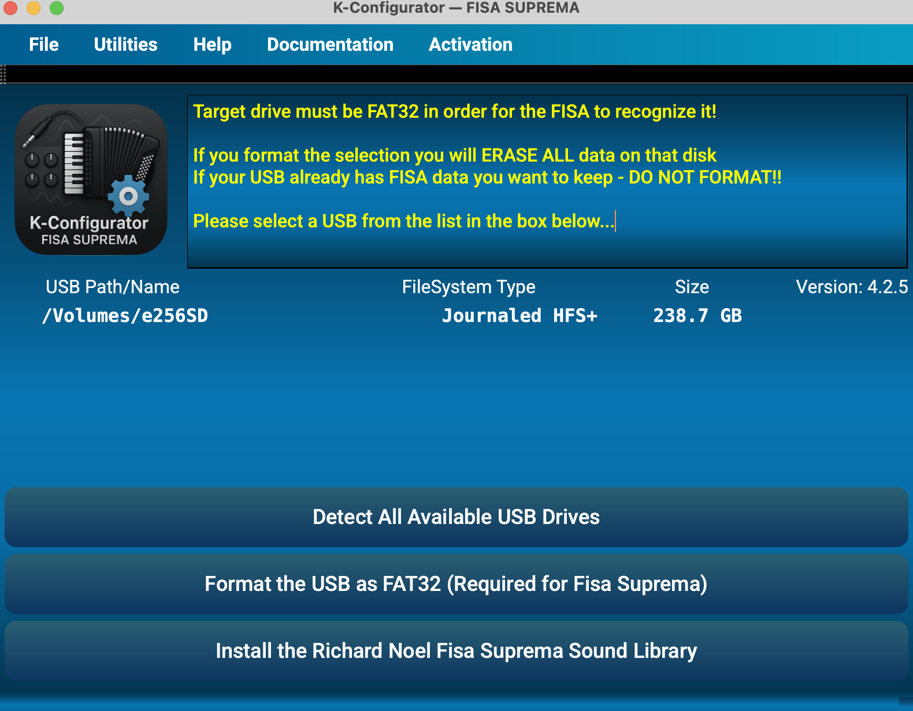
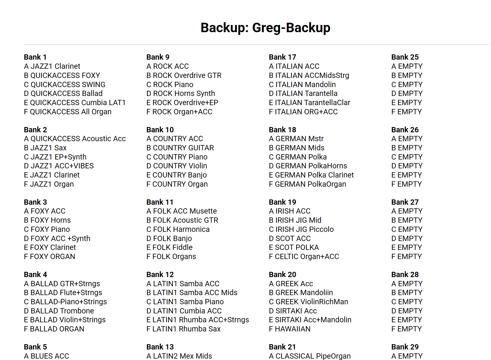

K-Configurator
Companion App for Korg Fisa Suprema
Seamlessly installs the Richard Noel Sounds — Banks/Scenes
Organize banks & scenes, perform bi-directional moves (entire banks, single scenes, or groups), choose Replace or Swap with Undo, clean USBs, print ranges, export, and unlock premium libraries. Cross-platform for macOS, Windows, and Linux — with a 14-day free trial.
Core Features (All Platforms)
- USB Cleaning — Removes hidden dot-files and resource-fork “ghost” files so your instrument reads the drive cleanly.
- Drive Prep — Build the correct folder structure for backups instantly.
- Tree Management — 100 banks per backup (00–99), each with scenes A–F.
- Dual-Tree View — Work with source and destination side-by-side.
- Bi-Directional Moves — Drag banks/scenes either direction between trees.
- Granular Control — Move an entire bank, a single scene, or selected groups of scenes anywhere.
- Replace vs Swap: Replace leaves source untouched; Swap returns destination’s original to source.
- Undo — Instantly roll back your last operation.
- Printing — Print the full tree or a bank range (e.g., 1–20) with crisp, high-contrast output.
- Bulk Export — Convert batches of
.rif→.scawithout prompts. - Selective Restore — Import whole archives or specific banks only.
Try, Subscribe, Expand
- 14-Day Free Trial — Explore everything before committing.
- In-App Purchases & Subscriptions — Secure via PayPal.
- Premium Libraries — Unlock pro-grade sound libraries (e.g., Richard Noel) in-app.
- Future Content — New high-quality libraries from artists worldwide.
What can you do with the K-Configurator?
Purchase & install premium programming
Use PayPal to purchase and download Richard Noel programming right in the app — with more pro libraries coming as they become available.
Reorganize banks & scenes for your gigs
Reorganize, rename, move, or print banks and scenes from your FISA backup. Planning an Oktoberfest? Move entire banks for quick access and tweak scenes inside banks. Print your Banks & Scenes for a handy stage reference.
Format & clean USB drives the right way
Format flash drives to FAT-32 (as required by Korg) and clean “ghost” dot-files that cause confusion. K-Configurator can even format larger USB drives (>32GB).
Visualize two backups
Move scenes and/or banks from one backup to another easily. Create instant backup copies for duplication or saving.
Get updates for your purchased banks
If you purchased FISA banks & scenes through V-Music, you’ll receive updates via K-Configurator.
Learn from expert resources
Access curated tips and informational resources to get the most out of your FISA.
macOS
- Universal Binary — runs on Intel (x86_64) and Apple Silicon (ARM64).
- Fully signed & notarized for macOS.
Min: macOS 15 or later, 8GB RAM, USB port.
Windows
- Signed installer for Windows 10/11 (x64).
- FAT32 formatting up to 256GB.
- Includes required VC++ runtimes.
Min: Windows 10 x64, 8GB RAM, USB port.
Linux
- Portable AppImage for x86_64 systems.
- Tested on Ubuntu 24.04+ (glibc ≥ 2.38).
Compatible with Ubuntu, Fedora, Debian, Arch, openSUSE. 8GB RAM, USB port recommended.
